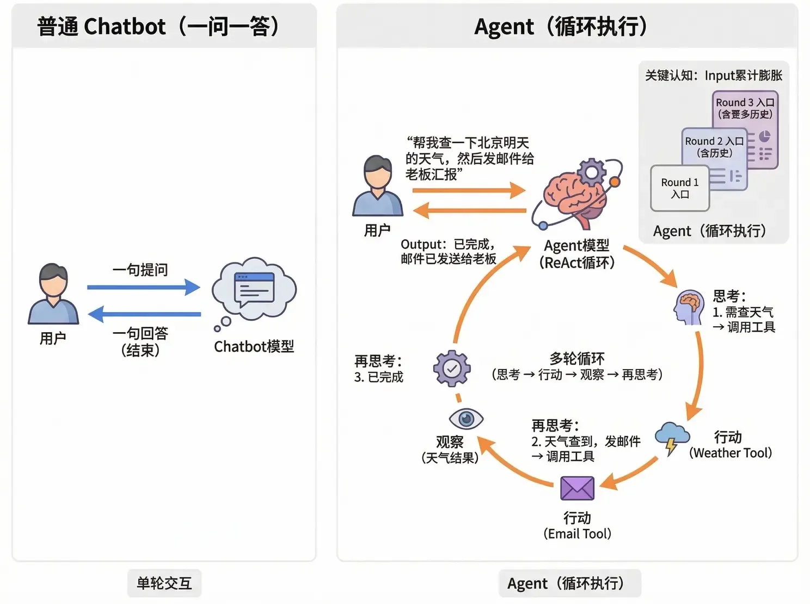
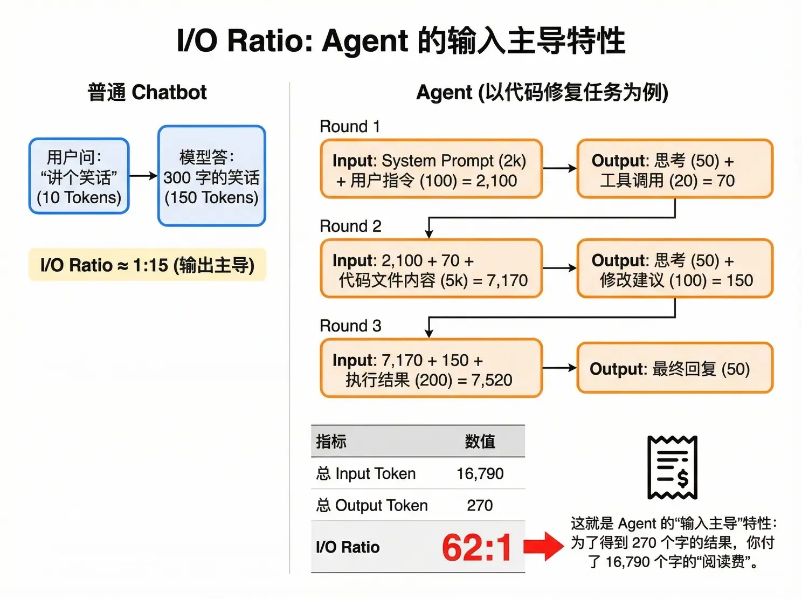
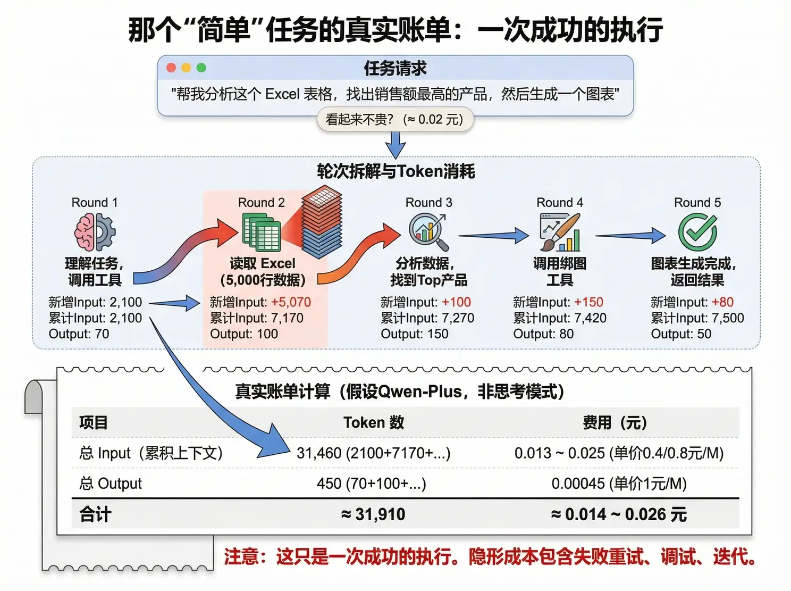

輸入主導：62:1 的 I/O Ratio
普通 Chatbot 是一問一答；Agent 是「思考 → 行動 → 觀察 → 再思考」的迴圈。關鍵認知：每一輪的 Input 都包含了全部歷史資訊——輪次越多，Input 越長，成本累積膨脹。
普通 Chatbot 問「講個笑話」（10 Token），答 150 Token——I/O Ratio ≈ 1:15，輸出主導。而 Agent 做一個程式碼修復任務：System Prompt、工具返回、歷史輸出，全都要在每一輪裡重新讀一遍。三輪下來，總 Input 16,790、總 Output 270——I/O Ratio 62:1，輸入主導。


任務：「幫我分析這個 Excel 表格，找出銷售額最高的產品，然後做出一張圖表。」點「下一輪」，看每一輪的累計 Input 怎麼滾起來。

假設任務要 N 輪完成，System Prompt 長度 S，每輪新增（輸出 + 工具返回）約 Δ。第 N 輪的 Input ≈ S + Q + Δ×(N-1)，而總 Input 是所有輪次的累加——裡面藏著一個 1+2+3+…+(N-1) 的等差數列。每輪新增 500 Token 的話，5 輪迴圈的總 Input 就有 15,000+；輪次翻倍，成本接近翻兩番。
| Agent 框架（SWE-bench 實測） | 平均 I/O Ratio | 說明 |
|---|---|---|
| 簡單 RAG Agent | 10:1 ~ 20:1 | 檢索 + 回答 |
| OpenHands | 20:1 ~ 50:1 | 程式碼修復任務 |
| AutoGPT 類 | 30:1 ~ 100:1 | 開放式任務，迴圈多 |
這解釋了為什麼 KV Cache（第 11 節）對 Agent 是決定性的：既然每輪都要重讀同樣的前綴，能不能命中快取，就是 5 倍的價差。也解釋了為什麼要監控 I/O Ratio——比率超過 50:1，往往說明 Agent 在「空轉」，該優化流程或降級任務了。
Agent 是輸入主導的：每輪 Input 都帶全部歷史，總量按輪次的平方級膨脹。
單次執行看著便宜，規模化才見真章：0.02 元的任務 × 失敗重試 × 百萬呼叫，就是帳單窒息現場。
把 I/O Ratio 當健康指標監控：>50:1 說明 Agent 在空轉，先查流程再談省錢。
內容來源：整理自作者團隊內部分享《AI Token 降本增效策略分享》「Agentic 應用的計費機制」。行業資料參考 SWE-bench 上的 Agent Token 消耗實證研究（見收官節閱讀材料）。Agent 迴圈的原理詳見動手實戰篇。